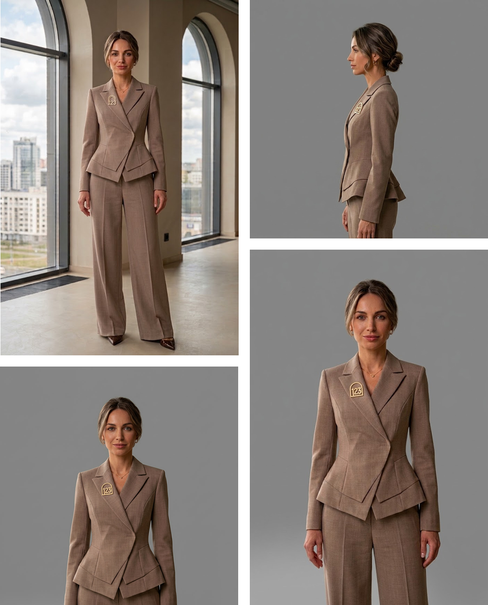
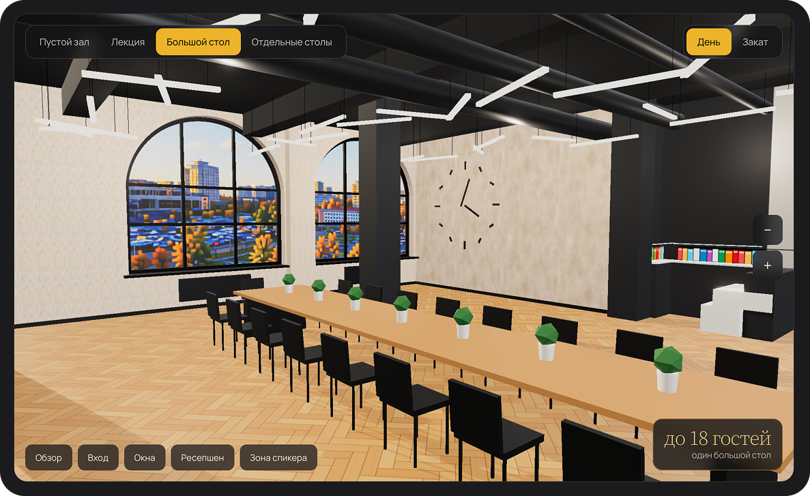
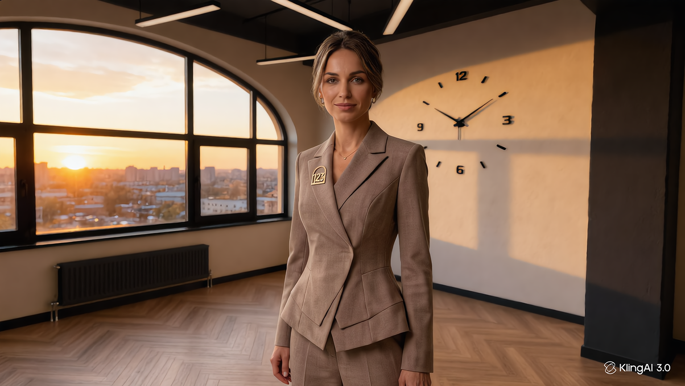
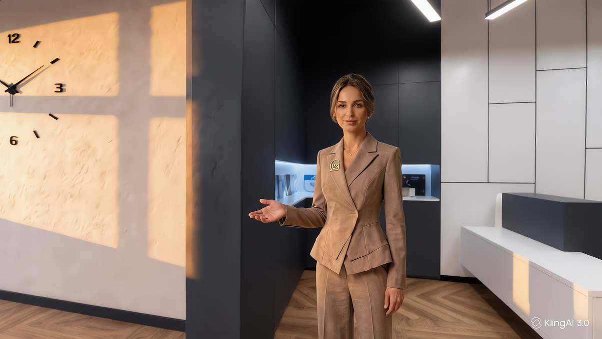
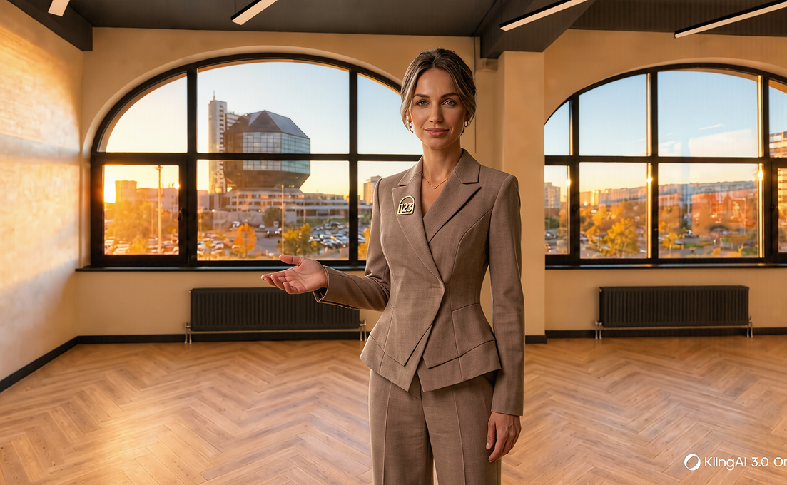

АРКА 123 — Premium Event Space
Complete website development from scratch in 9 hours using only AI tools. Featuring a custom 3D room, brand character, and animated logo.

The Challenge
The task was to create a complete website for a premium event space (АРКА 123) that highlights its unique features: huge arched windows with a view of the National Library. The project required not just design, but a full-cycle development: 3D visualization, a brand character, and complex animations.
Character Design
AI-generated consistent character for the brand presentation. The prompt was carefully tuned to maintain the same face and outfit across different angles.

3D Room Visualization
A fully 3D-rendered room that preserves the actual layout and arched windows (4x3.5m). Users can see the space in different configurations.

Hero Video Generation
The brand hero is presented through a series of video scenes. I used AI tools to generate the base images and then animate them into smooth video transitions.
Source Frames (Generated with Kling AI)



How I Did It (AI Workflow)
I acted as an AI Art Director, managing various neural networks to achieve the final result in just 9 hours:
- Logo Animation: Generated precise CSS/JS code using Claude to create a spring animation of letters and drawing an arch.
- Brand Character: Developed a detailed prompt for a consistent image of a woman in a classic suit with a logo brooch.
- 3D Room: Created a 3D scene with real layout preserved using Gemini and Claude.
- Website Code: Generated clean HTML/CSS/JS for all blocks (header, services, pricing, reviews) using Claude Pro.
The Result
A fully interactive website that fully meets the technical requirements. This project demonstrates the power of prompt engineering and the ability to manage multiple AI tools to replace a traditional development team.
Time spent: 9 hours.
View live site